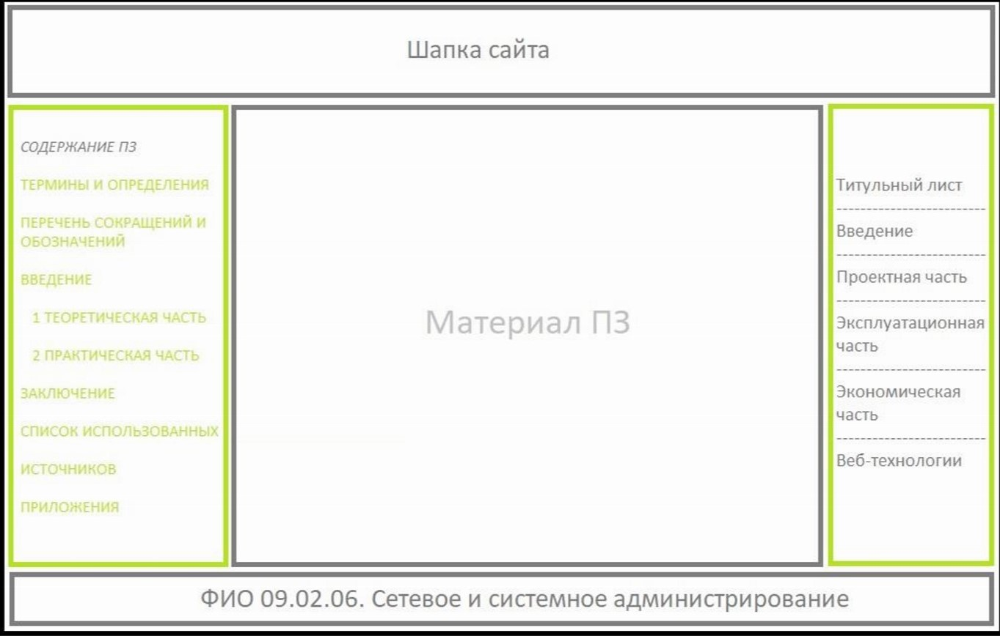

4 Веб-технологии
Цель сайта: оформление пояснительной записки к дипломному проекту в виде интерактивного веб-сайта, доступного для просмотра в любом браузере.
Задачи сайта:
- отобразить все разделы пояснительной записки;
- обеспечить удобную навигацию (содержание + меню для защиты);
- соответствовать требованиям к макету и цветовой схеме;
- реализовать резиновую вёрстку без использования JavaScript.
Сайт реализован на чистых HTML5 и CSS3. Применён принцип отдельного файла на каждую страницу с общим CSS-файлом css/style.css. Для вёрстки используется flexbox-модель и медиазапросы для адаптивности.
Принцип вложенности тегов:
Макет: трёхколоночная резиновая компоновка. Шапка фиксированная, высота 90px. Левое меню — 320px (содержание). Правое меню — 230px (для защиты). Центральная область — резиновая.
Цветовая схема подобрана на сайте colorscheme.ru. Светлая тема, монохромная (один тон с разной насыщенностью).
| Переменная CSS | HEX-код | Применение |
|---|---|---|
| --primary-color | #2F9292 | Шапка, кнопки |
| --secondary-color | #35AE5E | Акценты |
| --dark-color | #07444A | Меню, заголовки |
| --light-color | #83E3E3 | Подложки, hover |
| --accent-color | #81E3E3 | Декоративные элементы |


Шрифты: Arial (без засечек) — для основного текста и заголовков. Для блоков кода — Courier New.
| Элемент | Шрифт | Размер | Цвет |
|---|---|---|---|
| Заголовок h1 (страница) | Arial | 2,2 rem | #07444A |
| Подзаголовок (section-title) | Arial | 1,5 rem | #2F9292 |
| Основной текст | Arial | 1,05 rem | #333333 |
| Термины | Arial italic | 1,05 rem | #07444A |
| Ссылки (обычная) | Arial | 0,95 rem | #FFFFFF / #07444A |
| Ссылки (hover) | Arial | 0,95 rem | #83E3E3 |
| Таблицы — заголовок | Arial | 0,95 rem | #FFFFFF на #2F9292 |
| Таблицы — текст | Arial | 0,95 rem | #333333 |



| Технология / ПО | Версия | Назначение |
|---|---|---|
| HTML | HTML5 | Структура и разметка |
| CSS | CSS3 | Оформление, цвета, шрифты, адаптивность |
| Visual Studio Code | 1.89 | Редактор кода |
| Google Chrome | 124 | Тестирование |
| colorscheme.ru | — | Подбор цветовой схемы |
Каждый раздел пояснительной записки реализован в виде отдельного HTML-файла. Все страницы используют общий CSS.
| Файл | Наименование страницы |
|---|---|
| index.html | Титульный лист |
| terms.html | Термины и определения |
| abbreviations.html | Перечень сокращений |
| introduction.html | Введение |
| theoretical.html | 1 Теоретическая часть |
| practical.html | 2 Практическая часть |
| project.html | Проектная часть |
| operation.html | Эксплуатационная часть |
| economy.html | Экономическая часть |
| technology.html | Веб-технологии |
| conclusion.html | Заключение |
| list.html | Список источников |
| application.html | Приложения (содержание) |
| application1.html – application8.html | Приложения А – З |
| css/style.css | Общая таблица стилей |